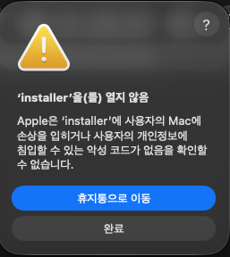
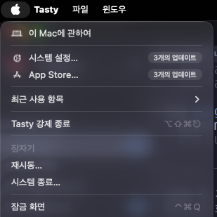
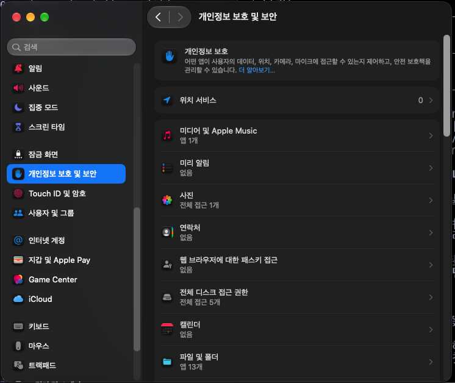
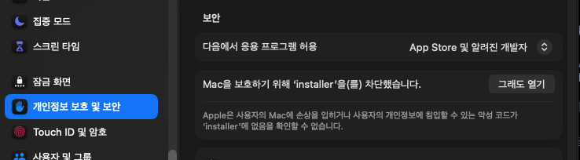
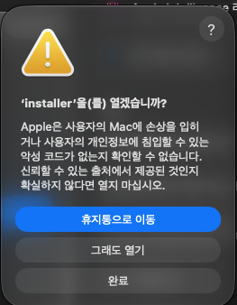
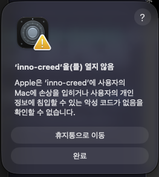

macOS에서 내려받은 installer를 더블클릭하면
"Apple은 악성 코드가 없음을 확인할 수 없습니다"라며 열리지 않습니다.
정상이며, 아래 1~5단계로 허용해 주면 됩니다.
설치 도중 inno-creed에 대해 같은 경고가 한 번 더 뜨는데, 그때도 똑같이 하면 됩니다. 화면 그대로 따라가세요.
installer)에 대해,
그다음 설치 도중 본체(inno-creed)에 대해 같은 경고가 뜹니다 — 대상 이름만 다르고 절차는 같습니다(6단계).
한 번 허용한 파일은 다음부터 그냥 열리지만, 새 버전을 다시 내려받으면 새 파일이라 그때 또 한 번씩 필요합니다.installer 옆에 payload 폴더가 나란히 있어야 설치가 됩니다.
installer 파일만 따로 다른 곳으로 옮기면 실행돼도 "설치할 파일을 찾을 수 없다"에서 멈춥니다.1~2분이면 끝납니다.
installer를 한 번 더블클릭합니다 — 막히는 게 정상입니다압축을 푼 폴더 안의 installer를 그냥 더블클릭하세요.
아래 같은 경고가 뜨면서 열리지 않습니다. 여기서 [완료]를 누릅니다.

🚨 [휴지통으로 이동]을 누르지 마세요. 파일이 지워져 처음부터 다시 받아야 합니다. 파란색으로 강조돼 있어 무심코 누르기 쉬우니 주의하세요.
이 "막히는 시도"를 반드시 한 번 해야 합니다. macOS는 방금 차단한 항목에 대해서만 다음 단계의 [그래도 열기] 버튼을 보여줍니다. 시도 없이 설정부터 열면 그 버튼이 없습니다.
지금 어떤 앱을 쓰고 있든 화면 맨 왼쪽 위의 사과 모양을 누르면 같은 메뉴가 나옵니다.

목록이 길어 한참 내려가야 보입니다. 왼쪽 위 검색창에 보안을 입력해도 바로 찾을 수 있습니다.

"개인정보 보호" 항목들을 지나 보안 섹션까지 내려가면 "Mac을 보호하기 위해 'installer'을(를) 차단했습니다"라는 줄과 오른쪽에 [그래도 열기] 버튼이 있습니다.

Touch ID나 Mac 로그인 암호를 물어보면 입력해 주세요. 관리자 확인 절차입니다.
같은 모양의 경고가 한 번 더 뜨는데, 이번에는 선택지에 [그래도 열기]가 있습니다. 그것을 누르면 인스톨러가 실행됩니다.

✅ 인스톨러 창이 뜨면 성공입니다. 이제 화면 안내를 따라 다음을 눌러 진행하세요.
inno-creed에 대해 한 번 더 같은 경고가 뜹니다인스톨러가 방금 설치한 본체를 실제로 실행해 보기 때문입니다(버전 확인·브라우저 연결 등록·설치 점검).
그래서 이번에는 대상 이름이 inno-creed로 바뀌어 같은 경고가 나옵니다.

inno-creed. [완료]를 누르고 2~5단계를 그대로 한 번 더 하면 됩니다.🚨 여기서도 [휴지통으로 이동]을 누르지 마세요. 방금 설치한 본체가 지워져 설치를 처음부터 다시 해야 합니다.
시스템 설정의 보안 섹션에서 이번에 누를 줄은 "…'inno-creed'을(를) 차단했습니다" 입니다.
이름이 installer로 보인다면 그건 아까 처리한 예전 줄이니, inno-creed라고 적힌 쪽을 누르세요.
이 허용을 건너뛰면 Claude에서 도구가 동작하지 않습니다. Claude Desktop이 바로 이 inno-creed를
실행해서 아마란스와 통신하기 때문입니다.
✅ 여기까지 하면 설치가 끝납니다. 이어서 나오는 확장 프로그램 연결은 Chrome 확장 프로그램 설치 방법을 그대로 따라가세요 — macOS에서도 이 확장이 있어야 아마란스 로그인이 Claude로 전달됩니다.
거의 대부분 1단계를 건너뛴 경우입니다. macOS는 방금 차단한 항목에 대해서만 이 버튼을 보여줍니다.
installer를 다시 한 번 더블클릭해 경고를 띄운 뒤(=[완료]), 곧바로 시스템 설정으로 돌아오면 줄이 생깁니다.
버튼에 적힌 이름이 지금 열려는 것(installer 또는 inno-creed)과 다르면
다른 프로그램의 차단 기록입니다. 그건 누르지 마세요.
파일이 휴지통으로 들어갔을 뿐이라 되돌릴 수 있습니다. 휴지통을 열어 해당 파일에서 오른쪽 클릭 → [되돌려 놓기]를 누르세요.
이미 휴지통을 비웠다면, installer였다면 zip을 다시 내려받아 1단계부터,
inno-creed였다면 인스톨러를 다시 실행해 설치부터 하면 됩니다.
installer를 혼자만 다른 자리로 옮겼을 때 나옵니다.
인스톨러는 자기 바로 옆의 payload 폴더에서 설치할 파일을 찾습니다.
압축을 푼 폴더를 통째로 둔 채, 그 안의 installer를 실행하세요.
같은 폴더에 있는 installer-cli를 대신 쓸 수 있습니다. 터미널에서 실행하면 같은 설치를 글자 안내로 진행합니다.
installer-cli도 처음에는 똑같이 차단되므로 같은 1~5단계를 한 번 거쳐야 합니다.
압축을 푼 폴더에 아래 한 줄이면 차단 표시가 지워져 그냥 실행됩니다(시스템 설정을 열 필요 없음).
xattr -dr com.apple.quarantine ~/Downloads/inno-creed-installer-macos-arm64터미널에서 ./installer로 바로 실행해도 됩니다 — Gatekeeper의 이 차단은 Finder에서 열 때 적용됩니다.
이미 허용한 파일은 다음부터 그냥 열립니다. 새 버전을 내려받으면 새 파일이라 한 번 더 필요합니다.
경고 자체를 없애려면 Apple 개발자 프로그램(유료) 서명과 공증이 필요합니다. 지금 배포판에는 적용돼 있지 않습니다.
Windows는 대신 SmartScreen 경고가 뜹니다 — 추가 정보 → 실행을 누르면 됩니다. Linux는 별도 차단이 없고, 실행 권한만 있으면 바로 실행됩니다.